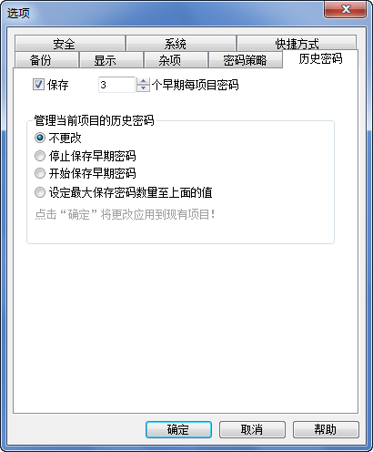

管理历史密码

当用户更改一个项目密码时， Password
Safe
可记录项目早期关联密码。该选项有助于，例如: 在关联该项目位置更改未能奏效。
该选项还可指定是否为新项目默认保存最近密码，用户可以在添加项目或编辑/查看项目对话框选择总是忽略。
保存 N 个早期每项目密码
选择该选项框和设置相应值定义为新项目默认保留密码。
管理当前项目的历史密码
该部份允许用户修改现有项目的历史密码跟踪如下:
- 停止保存早期密码
- 该项等同于清除在所有数据库项目中的
“保存 N 最后密码”选项框。注意该项将不会丢失已保存的历史密码，只是不再跟踪密码更改，直到重新激活保存历史密码为止。
- 开始保存早期密码
- 该项等同与开启在所有数据库项目中的
“保存 N 最后密码”选项框。不具有历史密码的项目将开始保存其上所设的密码数量。
项目的历史密码将跟踪改动，但项目跟踪数量不改变。
- 设定最大保存密码数量至上面的值
- 所有项目将开始保存至上面的密码数量。
不管怎样，如一个项目超过该项目保存的数量将丢失其历史密码。